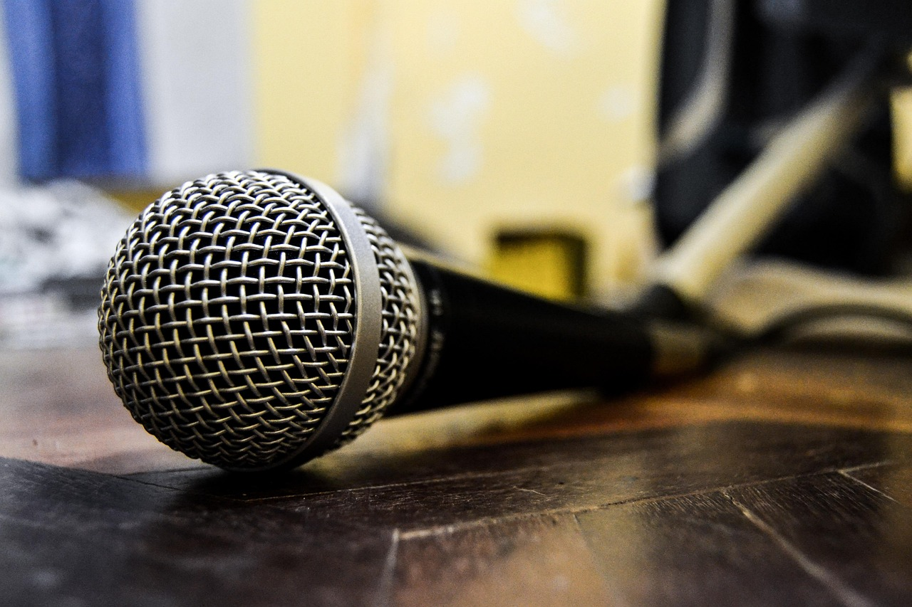
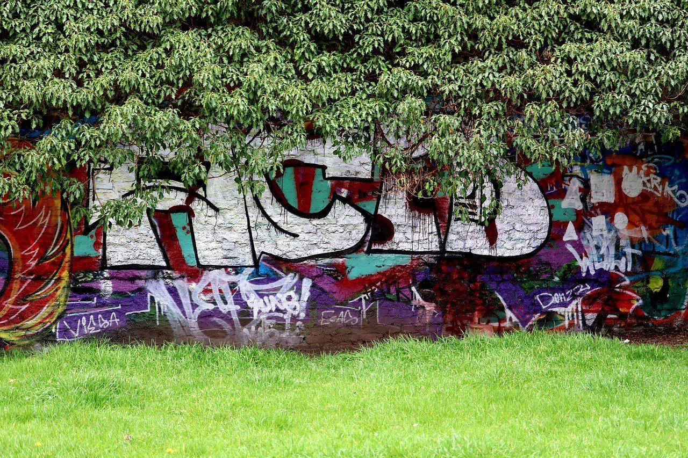

Soundcloud Rap
Soundcloud rap is a newer subgenre of rap that began in the late 2010s. It got its start when artists began to release their own music on the platform
SoundCloud, which also made it easier for artists to upload and share their work independently. Within
this subgenre, there are even more different styles that come from it. Three of the most prominent styles are Rage, Emo Rap, and Drill. All these different
styles have slightly different characteristics and elements.
Rage
Rage is a very high-energy subgenre of Soundcloud rap. It's known for it's prominent use of distorted 808s, frantic-sounding synths, and
aggressive vocal delivery. Artists like Playboi Carti, Yeat, Trippie Redd and Ken Carson are some of the most popular artists in this subgenre.
Rage incorporates some elements of punk rock and heavy metal, such as its distorted 808s and synths, while combining them with trap drums and effects. Rage lyrics are
often delivered in an autotuned-mumble rap style, with more focus on creating an energetic atmosphere than on lyricism. Older hip-hop fans may not enjoy this subgenre as much,
as it differs from the traditional values of rap, but younger audiences have embraced it for the energetic atmosphere it creates. Some popular Rage songs
include "Sky" by Playboi Carti, "Miss the Rage" by Trippie Redd and Playboi Carti, and "Yale" by Ken Carson.
Rage has gained popularity recently, and has become one of the most popular subgenres of not just Soundcloud Rap, but hip-hop as a whole.
Emo Rap
Emo Rap is a subgenre of Soundcloud rap that combines elements of trap and emo music. It's recognized by its emotional and introspective lyrics,
often dealing with themes of depression, anxiety, and heartbreak. Artists like Juice WRLD, Lil Peep, Lil Uzi Vert and XXXTentacion are some of the most popular artists
in this subgenre. Emo Rap production often uses guitar riffs and melodies, trap drums, as well as lo-fi production techniques. In this subgenre, the vocals are delivered in both
singing and rapping styles, with a focus on conveying emotion. Some popular Emo Rap songs are "Lucid Dreams" by Juice WRLD, "XO Tour Llif3" by Lil Uzi Vert, and "SAD!" by XXXTentacion. Emo Rap has grown
its following in recent years, particularly among fans who relate to the emotional themes explored in the music.

Drill
Drill is a subgenre of Soundcloud rap that originated in Chicago in the early 2010s. The subgenre is known for its dark, violent topics and aggressive, gritty production style. Drill music features
fast hi-hats, ominous melodies, and of course, heavy, sliding 808s. Rappers such as Chief Keef, Lil Durk, Polo G, King Von and Central Cee are some of the most popular artists in the drill scene. They often rap about street life,
gang violence, and other aggressive topics. The vocal delivery in drill is typically loud, and almost angry-sounding. Some popular drill songs include "Crazy Story" by King Von, "I Don't Like" by Chief Keef and Lil Reese, and "Doja" by Central Cee.
There are many different types of drill music coming from different areas in the world. Prominent styles of drill music are Chicago Drill, Brooklyn Drill, UK Drill, and Philly Drill, and all of them have developed
their own distinct sound and style.

Overall, Soundcloud Rap has gained a significant following in modern hip-hop culture, helping shape the sound of rap music in the 2020s.
Recommended Soundcloud Rap Albums
Whole Lotta Red by Playboi Carti
Pink Tape by Lil Uzi Vert
Back From the Dead by Chief Keef
Goodbye & Good Riddance by Juice WRLD